Statistical Methods for Quantitative MS-based Proteomics: Part II. Differential Abundance Analysis
Lieven Clement
statOmics, Ghent University

This is part of the online course Proteomics Data Analysis (PDA)
Outline
- Francisella tularensis Example
- Hypothesis testing
- Multiple testing
- Moderated statistics
- Experimental design
Note, that the R-code is included for learners who are aiming to develop R/markdown scripts to automate their quantitative proteomics data analyses. According to the target audience of the course we either work with a graphical user interface (GUI) in a R/shiny App msqrob2gui (e.g. Proteomics Bioinformatics course of the EBI and the Proteomics Data Analysis course at the Gulbenkian institute) or with R/markdowns scripts (e.g. Bioinformatics Summer School at UCLouvain or the Statistical Genomics Course at Ghent University).
1 Francisella tularensis experiment
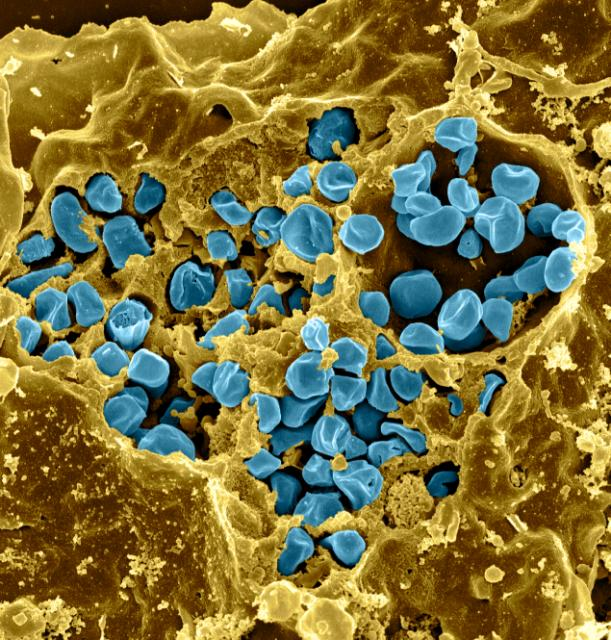

- Pathogen: causes tularemia
- Metabolic adaptation key for intracellular life cycle of pathogenic microorganisms.
- Upon entry into host cells quick phasomal escape and active multiplication in cytosolic compartment.
- Franciscella is auxotroph for several amino acids, including arginine.
- Inactivation of arginine transporter delayed bacterial phagosomal escape and intracellular multiplication.
- Experiment to assess difference in proteome using 3 WT vs 3 ArgP KO mutants
1.1 Import the data in R
Click to see code
- Load libraries
library(tidyverse)
library(limma)
library(QFeatures)
library(msqrob2)
library(plotly)
library(ggplot2)
library(data.table)- We use a peptides.txt file from MS-data quantified with maxquant that contains MS1 intensities summarized at the peptide level.
peptidesTable <- fread("https://raw.githubusercontent.com/statOmics/PDA/data/quantification/francisella/peptides.txt")
int64 <- which(sapply(peptidesTable,class) == "integer64")
for (j in int64) peptidesTable[[j]] <- as.numeric(peptidesTable[[j]]) - Maxquant stores the intensity data for the different samples in columnns that start with Intensity. We can retreive the column names with the intensity data with the code below:
- Read the data and store it in QFeatures object
pe <- readQFeatures(
assayData = peptidesTable,
fnames = 1,
quantCols = quantCols,
name = "peptideRaw")## Checking arguments.## Loading data as a 'SummarizedExperiment' object.## Formatting sample annotations (colData).## Formatting data as a 'QFeatures' object.## Setting assay rownames.## used (Mb) gc trigger (Mb) limit (Mb) max used (Mb)
## Ncells 8795459 469.8 15503455 828.0 NA 15503455 828.0
## Vcells 34574492 263.8 81348285 620.7 16384 81348278 620.7## used (Mb) gc trigger (Mb) limit (Mb) max used (Mb)
## Ncells 8795308 469.8 15503455 828.0 NA 15503455 828.0
## Vcells 34567854 263.8 81348285 620.7 16384 81348278 620.7- Update data with information on design
colData(pe)$genotype <- pe[[1]] |>
colnames() |>
substr(12,13) |>
as.factor() |>
relevel("WT")
pe |> colData()## DataFrame with 6 rows and 1 column
## genotype
## <factor>
## Intensity 1WT_20_2h_n3_3 WT
## Intensity 1WT_20_2h_n4_3 WT
## Intensity 1WT_20_2h_n5_3 WT
## Intensity 3D8_20_2h_n3_3 D8
## Intensity 3D8_20_2h_n4_3 D8
## Intensity 3D8_20_2h_n5_3 D81.2 Preprocessing
Click to see code to log-transfrom the data
- Log transform
- Peptides with zero intensities are missing peptides and should be
represent with a
NAvalue rather than0.
- Logtransform data with base 2
- Filtering
- We remove peptides that could not be mapped to a protein or that map
to multiple proteins (the protein identifier contains multiple
identifiers separated by a
;).
pe <- filterFeatures(
pe, ~ Proteins != "" & ## Remove failed protein inference
!grepl(";", Proteins)) ## Remove protein groups## 'Proteins' found in 2 out of 2 assay(s).- Remove reverse sequences (decoys) and contaminants. Note that this is indicated by the column names Reverse and depending on the version of maxQuant with Potential.contaminants or Contaminants.
## 'Reverse' found in 2 out of 2 assay(s).## 'Contaminant' found in 2 out of 2 assay(s).- Drop peptides that were identified in less than three sample. We tolerate the following proportion of NAs: pNA = (n-3)/n.
nObs <- 3
n <- ncol(pe[["peptideLog"]])
pNA <- (n-nObs)/n
pe <- filterNA(pe, pNA = pNA, i = "peptideLog")
nrow(pe[["peptideLog"]])## [1] 5740We keep 5740 peptides upon filtering.
- Normalization by median centering
- Summarization. We use the standard sumarisation in aggregateFeatures, which is a robust summarisation method.
## Your quantitative and row data contain missing values. Please read the
## relevant section(s) in the aggregateFeatures manual page regarding the
## effects of missing values on data aggregation.## Aggregated: 1/1- Filter proteins that contain many missing values
We want to have at least 4 observed proteins so that most proteins
have at least 2 observations in each group.
So we tolerate a proportion of (n-4)/n NAs.
Plot of preprocessed data
pe[["peptideNorm"]] |>
assay() |>
as.data.frame() |>
gather(sample, intensity) |>
mutate(genotype = colData(pe)[sample,"genotype"]) |>
ggplot(aes(x = intensity,group = sample,color = genotype)) +
geom_density() +
ggtitle("Peptide-level")## Warning: Removed 4421 rows containing non-finite outside the scale range
## (`stat_density()`).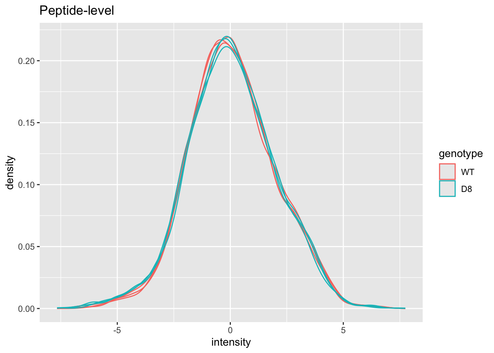
pe[["protein"]] |>
assay() |>
as.data.frame() |>
gather(sample, intensity) |>
mutate(genotype = colData(pe)[sample,"genotype"]) |>
ggplot(aes(x = intensity,group = sample,color = genotype)) +
geom_density() +
ggtitle("Protein-level")## Warning: Removed 149 rows containing non-finite outside the scale range
## (`stat_density()`).1.3 Summarized data structure
1.3.1 Design
| genotype | |
|---|---|
| Intensity 1WT_20_2h_n3_3 | WT |
| Intensity 1WT_20_2h_n4_3 | WT |
| Intensity 1WT_20_2h_n5_3 | WT |
| Intensity 3D8_20_2h_n3_3 | D8 |
| Intensity 3D8_20_2h_n4_3 | D8 |
| Intensity 3D8_20_2h_n5_3 | D8 |
- WT vs KO
- 3 vs 3 repeats
1.3.2 Summarized intensity matrix
| Intensity 1WT_20_2h_n3_3 | Intensity 1WT_20_2h_n4_3 | Intensity 1WT_20_2h_n5_3 | Intensity 3D8_20_2h_n3_3 | Intensity 3D8_20_2h_n4_3 | Intensity 3D8_20_2h_n5_3 | |
|---|---|---|---|---|---|---|
| WP_003013731 | -0.2277864 | -0.0333727 | 0.1810282 | -0.1946484 | 0.1347441 | 0.0522102 |
| WP_003013909 | -0.7603080 | -0.8862012 | -0.8565867 | -0.4951824 | -0.6100506 | -0.5490239 |
| WP_003014068 | 0.5743424 | 0.7821886 | 1.0336891 | 0.5098828 | 0.8536632 | 0.5446984 |
| WP_003014122 | -0.8382825 | -1.1131095 | -0.9099676 | -1.2104299 | -1.2575807 | -1.3093650 |
| WP_003014123 | -0.2803634 | -0.4062057 | -0.3159891 | -0.4216095 | -0.3453093 | -0.6329528 |
| WP_003014302 | 1.5696671 | 1.7486922 | 1.5869110 | 1.6919901 | 1.8142693 | 1.5398097 |
- 1025 proteins
1.3.3 Hypothesis testing: a single protein
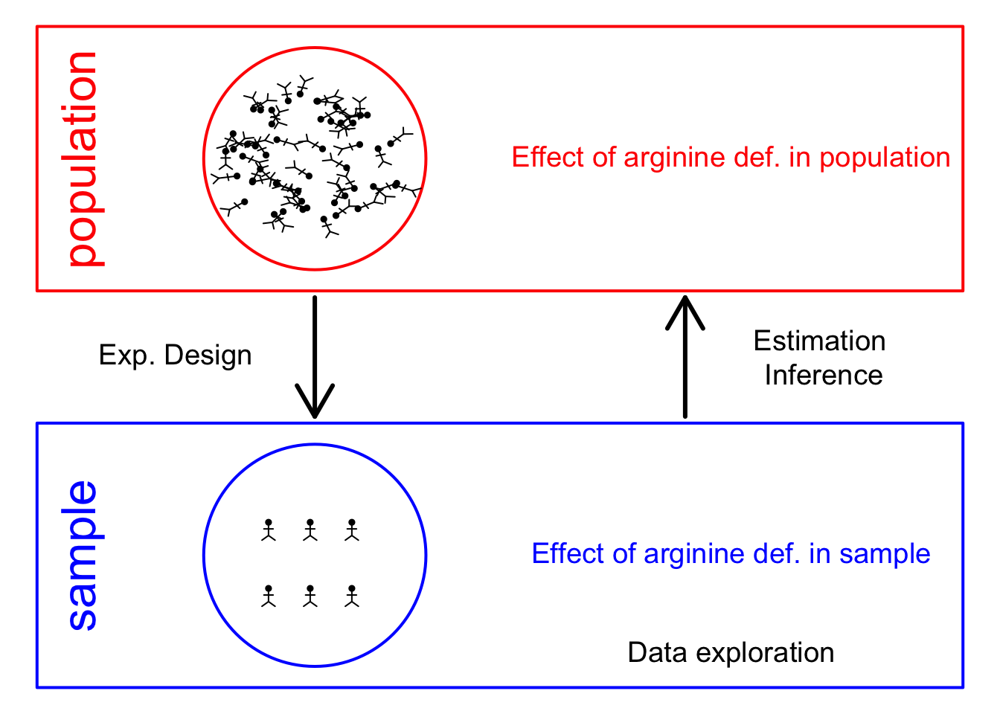
1.3.3.1 T-test
\[ \log_2 \text{FC} = \bar{y}_{p1}-\bar{y}_{p2} \]
\[ T_g=\frac{\log_2 \text{FC}}{\text{se}_{\log_2 \text{FC}}} \]
\[ T_g=\frac{\widehat{\text{signal}}}{\widehat{\text{Noise}}} \]
If we can assume equal variance in both treatment groups:
\[ \text{se}_{\log_2 \text{FC}}=\text{SD}\sqrt{\frac{1}{n_1}+\frac{1}{n_2}} \]
WP_003023392 <- data.frame(
intensity = assay(pe[["protein"]]["WP_003023392",]) |>
c(),
genotype = colData(pe)[,1])
WP_003023392 |>
ggplot(aes(x=genotype,y=intensity)) +
geom_point() +
ggtitle("Protein WP_003023392")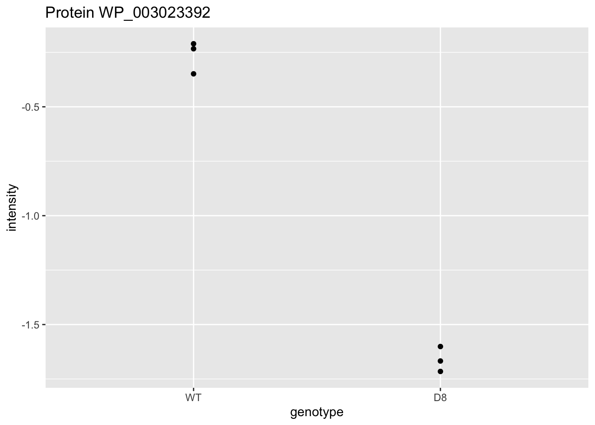
\[ t=\frac{\log_2\widehat{\text{FC}}}{\text{se}_{\log_2\widehat{\text{FC}}}}=\frac{-1.4}{0.0541}=-25.8 \]
Is t = -25.8 indicating that there is an effect?
How likely is it to observe t = -25.8 when there is no effect of the argP KO on the protein expression?
1.3.3.2 Null hypothesis (\(H_0\)) and alternative hypothesis (\(H_1\))
With data we can never prove a hypothesis (falsification principle of Popper)
With data we can only reject a hypothesis
In general we start from alternative hypothese \(H_1\): we want to show an effect of the KO on a protein
- But, we will assess this by falsifying the opposite:
\(H_0\): On average the protein abundance in WT is equal to that in KO<-
##
## Two Sample t-test
##
## data: intensity by genotype
## t = 25.828, df = 4, p-value = 1.335e-05
## alternative hypothesis: true difference in means between group WT and group D8 is not equal to 0
## 95 percent confidence interval:
## 1.246966 1.547353
## sample estimates:
## mean in group WT mean in group D8
## -0.2641239 -1.6612832How likely is it to observe an equal or more extreme effect than the one observed in the sample when the null hypothesis is true?
When we make assumptions about the distribution of our test statistic we can quantify this probability: p-value. The p-value will only be calculated correctly if the underlying assumptions hold!
When we repeat the experiment, the probability to observe a fold change for this gene that is more extreme than a 2.63 fold (\(\log_2 FC=-1.4\)) down or up regulation by random change (if \(H_0\) is true) is 13 out of 1 000 000.
If the p-value is below a significance threshold \(\alpha\) we reject the null hypothesis. We control the probability on a false positive result at the \(\alpha\)-level (type I error)
Note, that the p-values are uniform under the null hypothesis, i.e. when \(H_0\) is true all p-values are equally likely.
1.4 Multiple hypothesis testing
Consider testing DA for all \(m=1066\) proteins simultaneously
What if we assess each individual test at level \(\alpha\)? \(\rightarrow\) Probability to have a false positive (FP) among all m simultatenous test \(>>> \alpha= 0.05\)
Indeed for each non DA protein we have a probability of 5% to return a FP.
In a typical experiment the majority of the proteins are non DA.
So an upperbound of the expected FP is \(m \times \alpha\) or \(1066 \times 0.05=53\).
\(\rightarrow\) Hence, we are bound to call many false positive proteins each time we run the experiment.
1.4.1 Multiple testing
1.4.1.1 Family-wise error rate
The family-wise error rate (FWER) addresses the multiple testing issue by no longer controlling the individual type I error for each protein, instead it controls:
\[ \text{FWER} = \text{P}\left[FP \geq 1 \right]. \]
The Bonferroni method is widely used to control the type I error:
- assess each test at \[\alpha_\text{adj}=\frac{\alpha}{m}\]
- or use adjusted p-values and compare them to \(\alpha\): \[p_\text{adj}=\text{min}\left(p \times m,1\right)\]
Problem, the method is very conservative!
1.4.1.2 False discovery rate
- FDR: Expected proportion of false positives on the total number of positives you return.
- An FDR of 1% means that on average we expect 1% false positive proteins in the list of proteins that are called significant.
- Defined by Benjamini and Hochberg in their seminal paper Benjamini, Y. and Hochberg, Y. (1995). “Controlling the false discovery rate: a practical and powerful approach to multiple testing”. Journal of the Royal Statistical Society Series B, 57 (1): 289–300.
The False Discovery Proportion (FDP) is the fraction of false positives that are returned, i.e.
\[ FDP = \frac{FP}{R} \]
- However, this quantity cannot be observed because in practice we only know the number of proteins for which we rejected \(H_0\), \(R\).
- But, we do not know the number of false positives, \(FP\).
Therefore, Benjamini and Hochberg, 1995, defined The False Discovery Rate (FDR) as \[ \text{FDR} = \text{E}\left[\frac{FP}{R}\right] =\text{E}\left[\text{FDP}\right] \] the expected FDP.
- Controlling the FDR allows for more discoveries (i.e. longer lists with significant results), while the fraction of false discoveries among the significant results in well controlled on average. As a consequence, more of the true positive hypotheses will be detected.
1.4.1.3 Intuition of BH-FDR procedure
Consider \(m = 1000\) tests
Suppose that a researcher rejects all null hypotheses for which \(p < 0.01\).
If we use \(p < 0.01\), we expect \(0.01 \times m_0\) tests to return false positives.
A conservative estimate of the number of false positives that we can expect can be obtained by considering that the null hypotheses are true for all features, \(m_0 = m = 1000\).
We then would expect \(0.01 \times 1000 = 10\) false positives (\(FP=10\)).
Suppose that the researcher found 200 genes with \(p<0.01\) (\(R=200\)).
The proportion of false positive results (FDP = false positive proportion) among the list of \(R=200\) genes can then be estimated as \[ \widehat{\text{FDP}}=\frac{FP}{R}=\frac{10}{200}=\frac{0.01 \times 1000}{200} = 0.05. \]
1.4.1.4 Benjamini and Hochberg (1995) procedure for controlling the FDR at \(\alpha\)
Let \(p_{(1)}\leq \ldots \leq p_{(m)}\) denote the ordered \(p\)-values.
Find the largest integer \(k\) so that \[ \frac{p_{(k)} \times m}{k} \leq \alpha \] \[\text{or}\] \[ p_{(k)} \leq k \times \alpha/m \]
If such a \(k\) exists, reject the \(k\) null hypotheses associated with \(p_{(1)}, \ldots, p_{(k)}\). Otherwise none of the null hypotheses is rejected.
The adjusted \(p\)-value (also known as the \(q\)-value in FDR literature): \[ q_{(i)}=\tilde{p}_{(i)} = \min\left[\min_{j=i,\ldots, m}\left(m p_{(j)}/j\right), 1 \right]. \] In the hypothetical example above: \(k=200\), \(p_{(k)}=0.01\), \(m=1000\) and \(\alpha=0.05\).
1.4.1.5 Francisella Example
Click to see code
ttestMx <- function(y,group) {
test <- try(t.test(y[group],y[!group],var.equal=TRUE),silent=TRUE)
if(is(test,"try-error")) {
return(c(log2FC=NA,se=NA,tstat=NA,p=NA))
} else {
return(c(log2FC= (test$estimate%*%c(1,-1)),se=test$stderr,tstat=test$statistic,pval=test$p.value))
}
}
res <- apply(
assay(pe[["protein"]]),
1,
ttestMx,
group = colData(pe)$genotype=="D8") |>
t()
colnames(res) <- c("logFC","se","tstat","pval")
res <- res |>
as.data.frame() |>
na.exclude() |>
arrange(pval)
res$adjPval <- p.adjust(res$pval, "fdr")
alpha <- 0.05
res$adjAlphaForm <- paste0(1:nrow(res)," x ",alpha,"/",nrow(res))
res$adjAlpha <- alpha * (1:nrow(res))/nrow(res)
res$"pval < adjAlpha" <- res$pval < res$adjAlpha
res$"adjPval < alpha" <- res$adjPval < alpha FWER: Bonferroni method:\(\alpha_\text{adj} = \alpha/m = 0.05 / 1025= 5\times 10^{-5}\)
| logFC | pval | adjPval | adjAlphaForm | adjAlpha | pval < adjAlpha | adjPval < alpha | |
|---|---|---|---|---|---|---|---|
| WP_003023392 | -1.3971592 | 0.0000134 | 0.0136840 | 1 x 0.05/1025 | 0.0000488 | TRUE | TRUE |
| WP_011733588 | -0.4018518 | 0.0000418 | 0.0214166 | 2 x 0.05/1025 | 0.0000976 | TRUE | TRUE |
| WP_003038430 | -0.4024957 | 0.0001814 | 0.0408656 | 3 x 0.05/1025 | 0.0001463 | FALSE | TRUE |
| WP_003026016 | -1.0493276 | 0.0001834 | 0.0408656 | 4 x 0.05/1025 | 0.0001951 | TRUE | TRUE |
| WP_003014552 | -0.9536835 | 0.0001993 | 0.0408656 | 5 x 0.05/1025 | 0.0002439 | TRUE | TRUE |
| WP_011733645 | 0.3838435 | 0.0002817 | 0.0481190 | 6 x 0.05/1025 | 0.0002927 | TRUE | TRUE |
| WP_003040849 | -1.2473865 | 0.0004301 | 0.0629754 | 7 x 0.05/1025 | 0.0003415 | FALSE | FALSE |
| WP_003038940 | -0.2386737 | 0.0005609 | 0.0718619 | 8 x 0.05/1025 | 0.0003902 | FALSE | FALSE |
| … | … | … | … | … | … | … | … |
| WP_003040562 | 0.0039480 | 0.9976429 | 0.9985797 | 1065 x 0.05/1066 | 0.0499531 | FALSE | FALSE |
| WP_003041130 | 0.0002941 | 0.9992812 | 0.9992812 | 1066 x 0.05/1066 | 0.05 | FALSE | FALSE |
1.5 Moderated Statistics
Problems with ordinary t-test
Click to see code
problemPlots <- list()
problemPlots[[1]] <- res |>
ggplot(aes(x = logFC, y = se, color = adjPval < 0.05)) +
geom_point(cex = 2.5) +
scale_color_manual(values = alpha(c("black", "red"), 0.5)) +
theme_minimal()
i <- 1
problemPlots[[i+1]] <- colData(pe) |>
as.data.frame() |>
mutate(intensity = pe[["protein"]][rownames(res)[i],] |>
assay() |>
c()
) |>
ggplot(aes(x=genotype,y=intensity)) +
geom_point() +
ylim(-3,0) +
ggtitle(rownames(res)[i])
i <- 2
problemPlots[[i+1]] <- colData(pe) |>
as.data.frame() |>
mutate(intensity = pe[["protein"]][rownames(res)[i],] |>
assay() |>
c()
) |>
ggplot(aes(x=genotype,y=intensity)) +
geom_point() +
ylim(0,3) +
ggtitle(rownames(res)[i])## [[1]]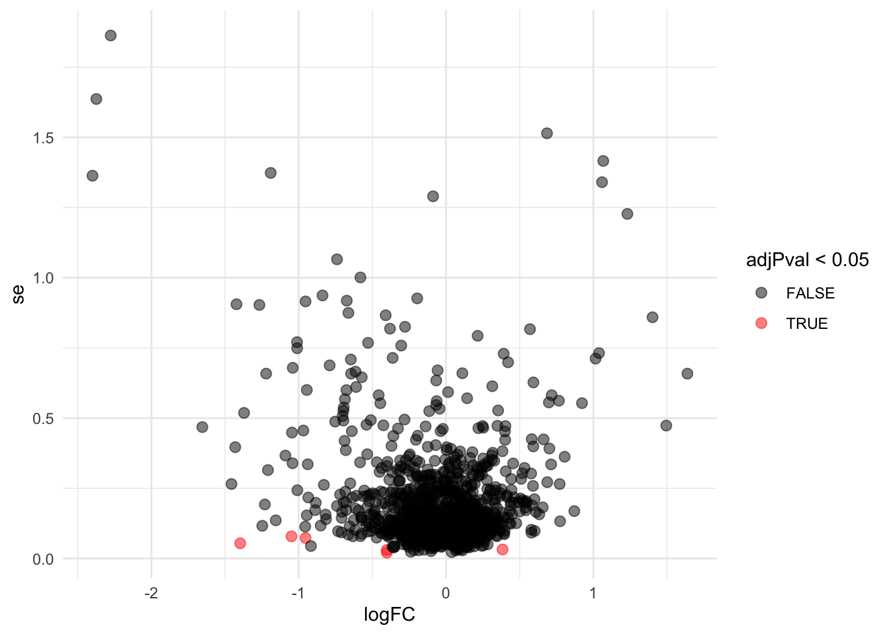
##
## [[2]]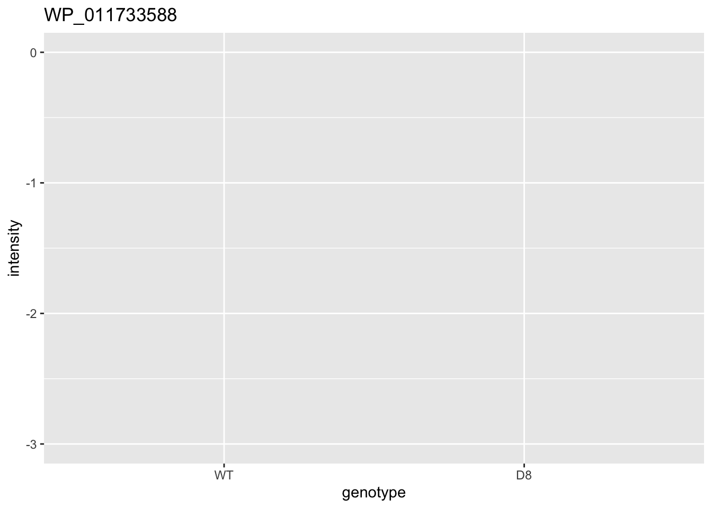
##
## [[3]]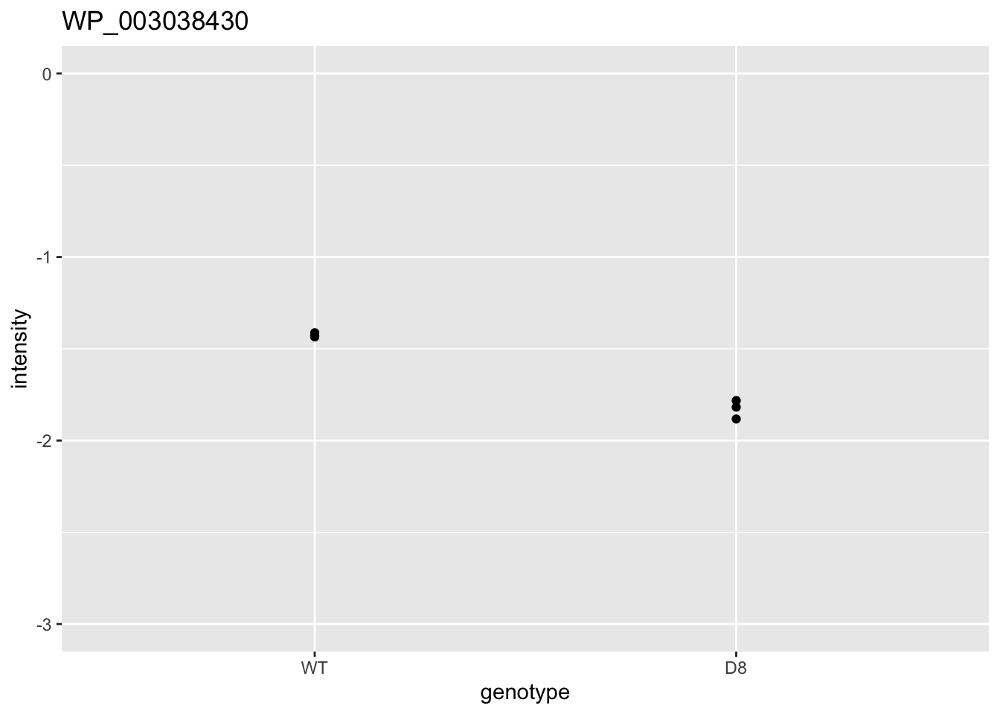
A general class of moderated test statistics is given by \[ T_g^{mod} = \frac{\bar{Y}_{g1} - \bar{Y}_{g2}}{C \quad \tilde{S}_g} , \] where \(\tilde{S}_g\) is a moderated standard deviation estimate.
- \(C\) is a constant depending on the design e.g. \(\sqrt{1/{n_1}+1/n_2}\) for a t-test and of another form for linear models.
- \(\tilde{S}_g=S_g+S_0\): add small positive constant to denominator of t-statistic.
- This can be adopted in Perseus.
Click to see code
simI<-sapply(res$se/sqrt(1/3+1/3),function(n,mean,sd) rnorm(n,mean,sd),n=6,mean=0) |>
t()
resSim <- apply(
simI,
1,
ttestMx,
group = colData(pe)$genotype=="D8") |>
t()
colnames(resSim) <- c("logFC","se","tstat","pval")
resSim <- as.data.frame(resSim)
tstatSimPlot <- resSim |>
ggplot(aes(x=tstat)) +
geom_histogram(aes(y=..density.., fill=..count..),bins=30) +
stat_function(fun=dt,
color="red",
args=list(df=4)) +
ylim(0,.6) +
ggtitle("t-statistic")
resSim$C <- sqrt(1/3+1/3)
resSim$sd <- resSim$se/resSim$C
tstatSimPerseus <- resSim |>
ggplot(aes(x=logFC/((sd+.1)*C))) +
geom_histogram(aes(y=..density.., fill=..count..),bins=30) +
stat_function(fun=dt,
color="red",
args=list(df=4)) +
ylim(0,.6) +
ggtitle("Perseus")## Warning: Removed 1 row containing missing values or values outside the scale range
## (`geom_bar()`).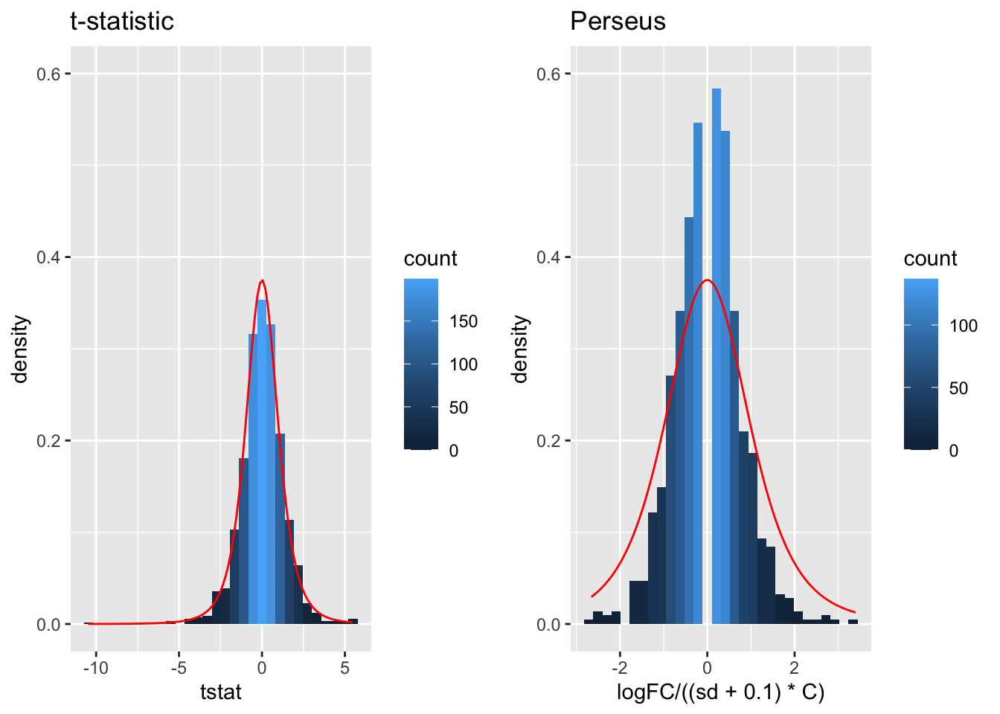
- The choice of \(S_0\) in Perseus is ad hoc and the t-statistic is no-longer t-distributed.
- Permutation test, but is difficult for more complex designs.
- Allows for Data Dredging because user can choose \(S_0\)
1.5.1 Empirical Bayes

Figure courtesy to Rafael Irizarry
\[ T_g^{mod} = \frac{\bar{Y}_{g1} - \bar{Y}_{g2}}{C \quad \tilde{S}_g} , \]
- empirical Bayes theory provides formal framework for borrowing strength across proteins,
- Implemented in popular bioconductor package limma and msqrob2
\[ \tilde{S}_g=\sqrt{\frac{d_gS_g^2+d_0S_0^2}{d_g+d_0}}, \]
- \(S_0^2\): common variance (over all proteins)
- Moderated t-statistic is t-distributed with \(d_0+d_g\) degrees of freedom.
- Note that the degrees of freedom increase by borrowing strength across proteins!
Click to see the code
- We model the protein level expression values using the
msqrobfunction. By defaultmsqrob2estimates the model parameters using robust regression.
We will model the data with a different group mean for every
genotype. The group is incoded in the variable genotype of
the colData. We can specify this model by using a formula with the
factor genotype as its predictor:
formula = ~genotype.
Note, that a formula always starts with a symbol ‘~’.
- Inference
We first explore the design of the model that we specified using the
the package ExploreModelMatrix
## [[1]]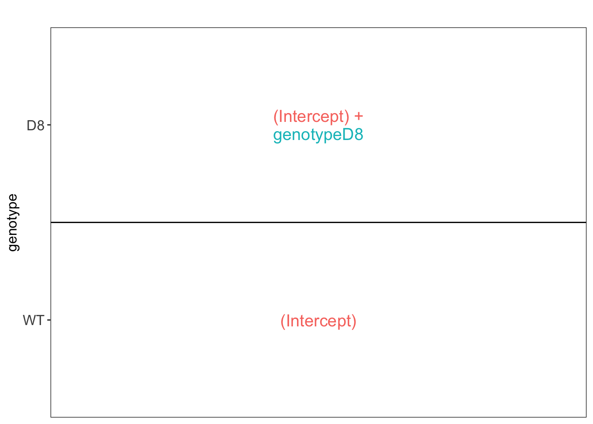
We have two model parameters, the (Intercept) and genotypeD8. This results in a model with two group means:
- For the wild type (WT) the expected value (mean) of the log2 transformed intensity y for a protein will be modelled using
\[\text{E}[Y\vert \text{genotype}=\text{WT}] = \text{(Intercept)}\]
- For the knockout genotype D8 the expected value (mean) of the log2 transformed intensity y for a protein will be modelled using
\[\text{E}[Y\vert \text{genotype}=\text{D8}] = \text{(Intercept)} + \text{genotypeD8}\]
The average log2FC between D8 and WT is thus \[\log_2\text{FC}_{D8-WT}= \text{E}[Y\vert \text{genotype}=\text{D8}] - \text{E}[Y\vert \text{genotype}=\text{WT}] = \text{genotypeD8} \]
Hence, assessing the null hypothesis that there is no differential abundance between D8 and WT can be reformulated as
\[H_0: \text{genotypeD8}=0\] We can implement a hypothesis test for each protein in msqrob2 using the code below:
L <- makeContrast("genotypeD8 = 0", parameterNames = c("genotypeD8"))
pe <- hypothesisTest(object = pe, i = "protein", contrast = L)We can show the list with all significant DE proteins at the 5% FDR using
## logFC se df t pval adjPval
## WP_003023392 -1.3971592 0.09349966 6.397042 -14.942933 3.254588e-06 0.003244824
## WP_003040849 -1.2473865 0.12404946 6.397042 -10.055557 3.736229e-05 0.015936958
## WP_003014552 -0.9536835 0.10126476 6.397042 -9.417724 5.550408e-05 0.015936958
## WP_003026016 -1.0283106 0.10528137 6.034774 -9.767261 6.393965e-05 0.015936958
## WP_003033719 -1.1740374 0.13543520 6.186857 -8.668628 1.098307e-04 0.021900233We can also visualise the results using a volcanoplot
gridExtra::grid.arrange(
volcanoT +
xlim(-3,3) +
ggtitle("ordinary t-test"),
volcano +
xlim(-3,3)
,nrow=2)## Warning: Removed 28 rows containing missing values or values outside the scale range
## (`geom_point()`).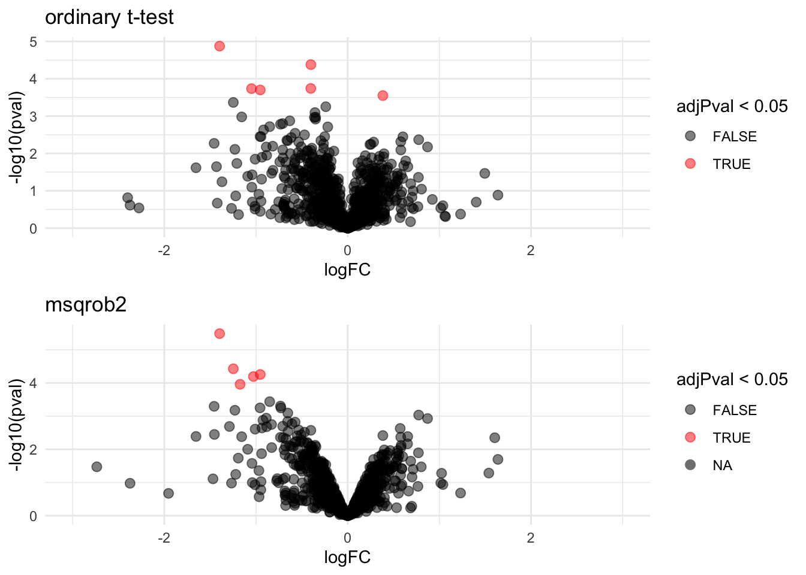
The volcano plot opens up when using the EB variance estimator
Borrowing strength to estimate the variance using empirical Bayes solves the issue of returning proteins with a low fold change as significant due to a low variance.
1.5.2 Shrinkage of the variance and moderated t-statistics
qplot(
sapply(rowData(pe[["protein"]])$msqrobModels,getSigma),
sapply(rowData(pe[["protein"]])$msqrobModels,getSigmaPosterior)) +
xlab("SD") +
ylab("moderated SD") +
geom_abline(intercept = 0,slope = 1) +
geom_hline(yintercept = ) ## Warning: Removed 28 rows containing missing values or values outside the scale range
## (`geom_point()`).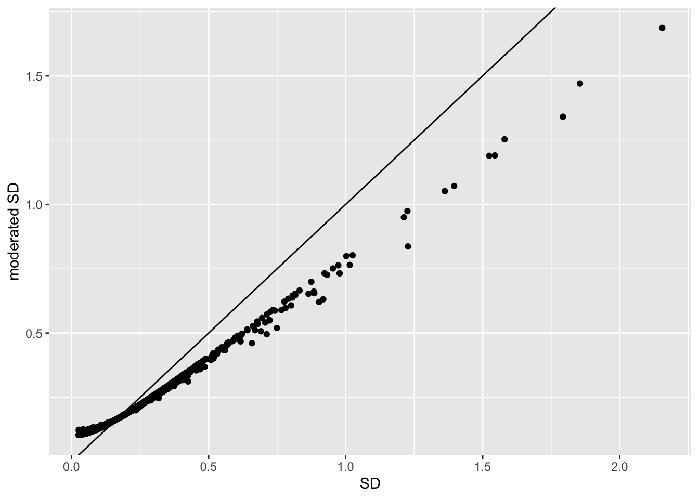
- Small variances are shrunken towards the common variance resulting in large EB variance estimates
- Large variances are shrunken towards the common variance resulting in smaller EB variance estimates
- Pooled degrees of freedom of the EB variance estimator are larger because information is borrowed across proteins to estimate the variance
1.6 Plots
sigNames <- rowData(pe[["protein"]])$genotypeD8 |>
rownames_to_column("protein") |>
filter(adjPval < 0.05) |>
pull(protein)
heatmap(assay(pe[["protein"]])[sigNames, ])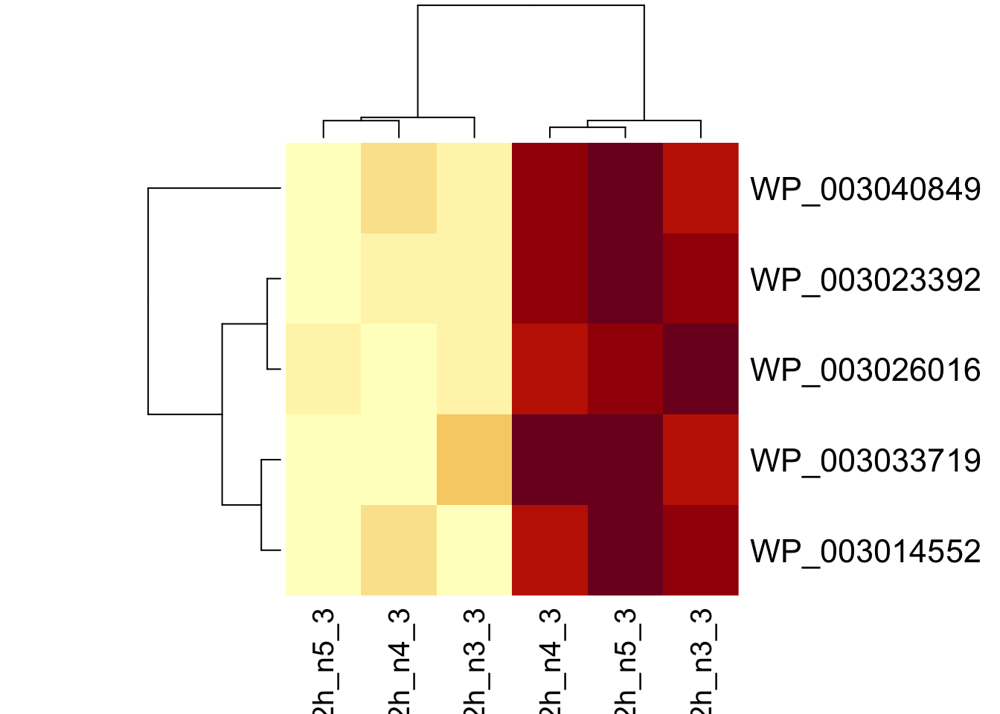
for (protName in sigNames)
{
pePlot <- pe[protName, , c("peptideNorm", "protein")]
pePlotDf <- data.frame(longForm(pePlot))
pePlotDf$assay <- factor(pePlotDf$assay,
levels = c("peptideNorm", "protein")
)
pePlotDf$genotype <- as.factor(colData(pePlot)[pePlotDf$colname, "genotype"])
# plotting
p1 <- ggplot(
data = pePlotDf,
aes(x = colname, y = value, group = rowname)
) +
geom_line() +
geom_point() +
facet_grid(~assay) +
theme(axis.text.x = element_text(angle = 70, hjust = 1, vjust = 0.5)) +
ggtitle(protName)
print(p1)
# plotting 2
p2 <- ggplot(pePlotDf, aes(x = colname, y = value, fill = genotype)) +
geom_boxplot(outlier.shape = NA) +
geom_point(
position = position_jitter(width = .1),
aes(shape = rowname)
) +
scale_shape_manual(values = 1:nrow(pePlotDf)) +
labs(title = protName, x = "sample", y = "peptide intensity (log2)") +
theme(axis.text.x = element_text(angle = 70, hjust = 1, vjust = 0.5)) +
facet_grid(~assay)
print(p2)
}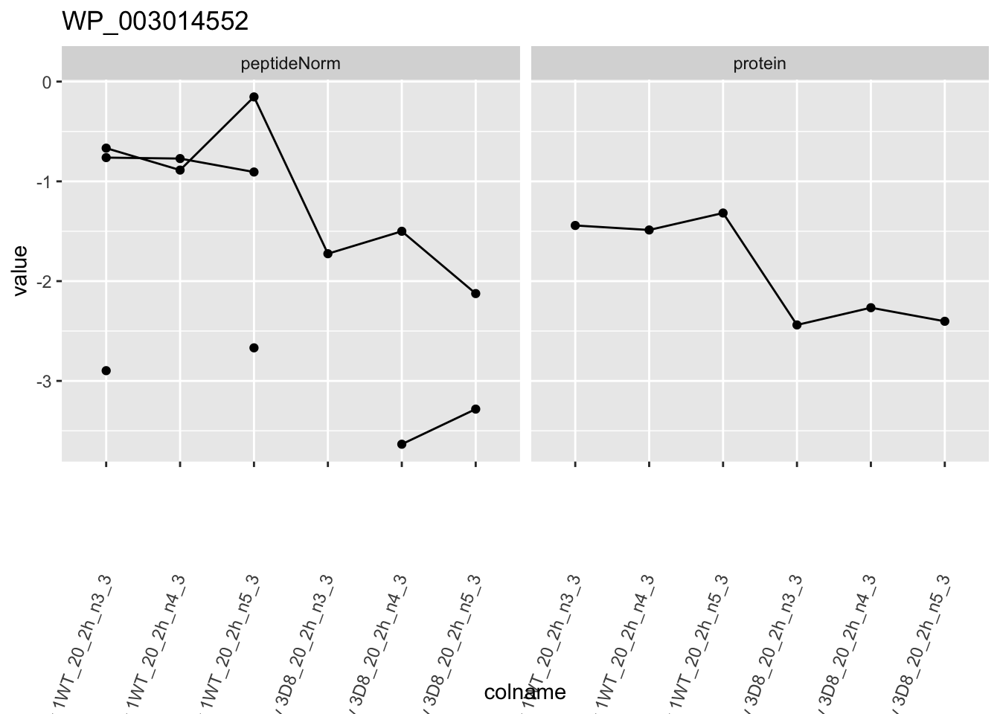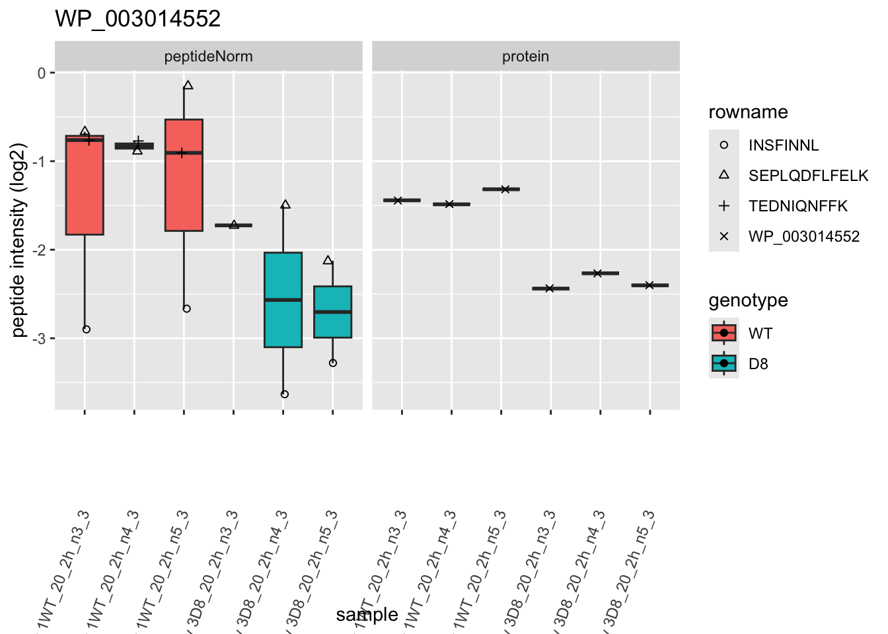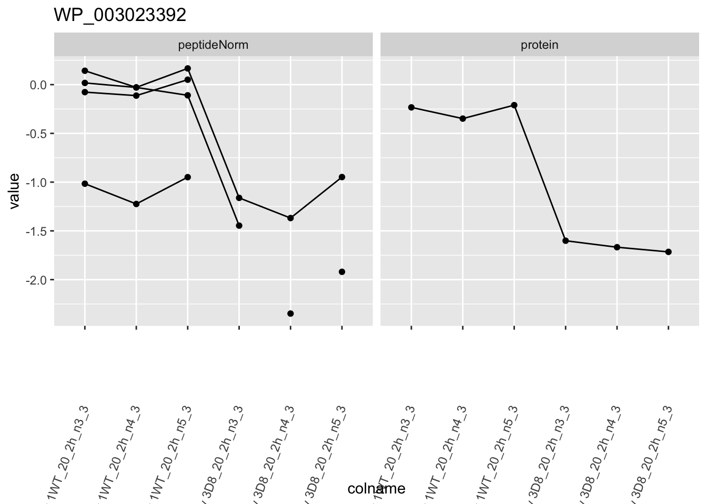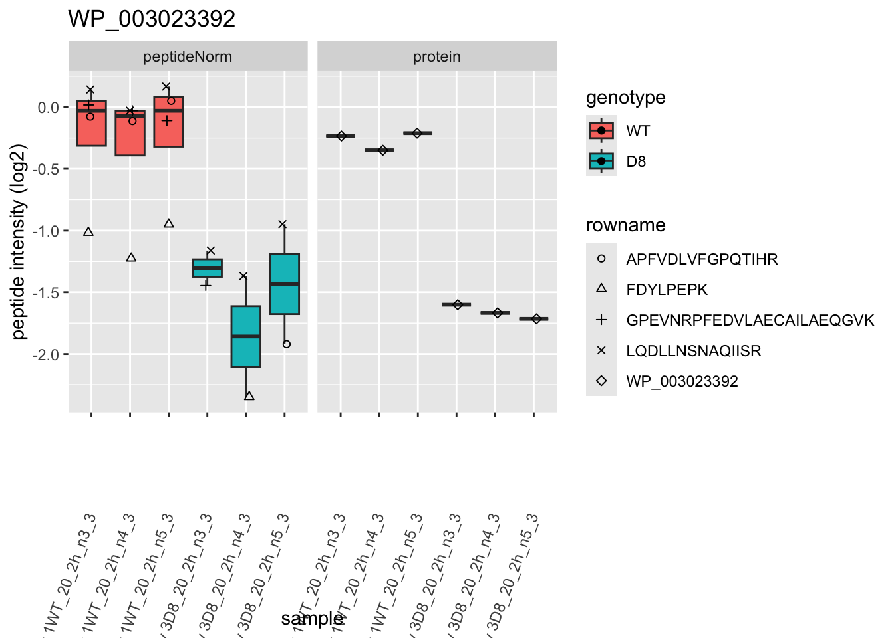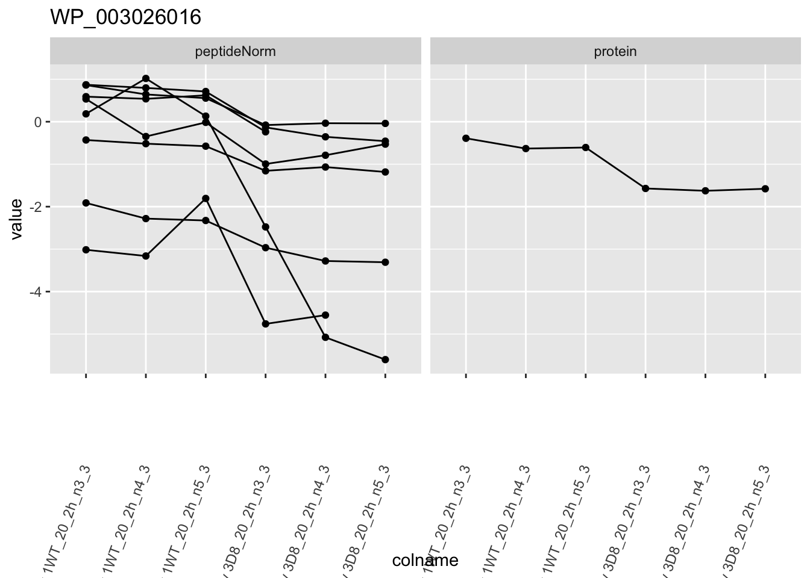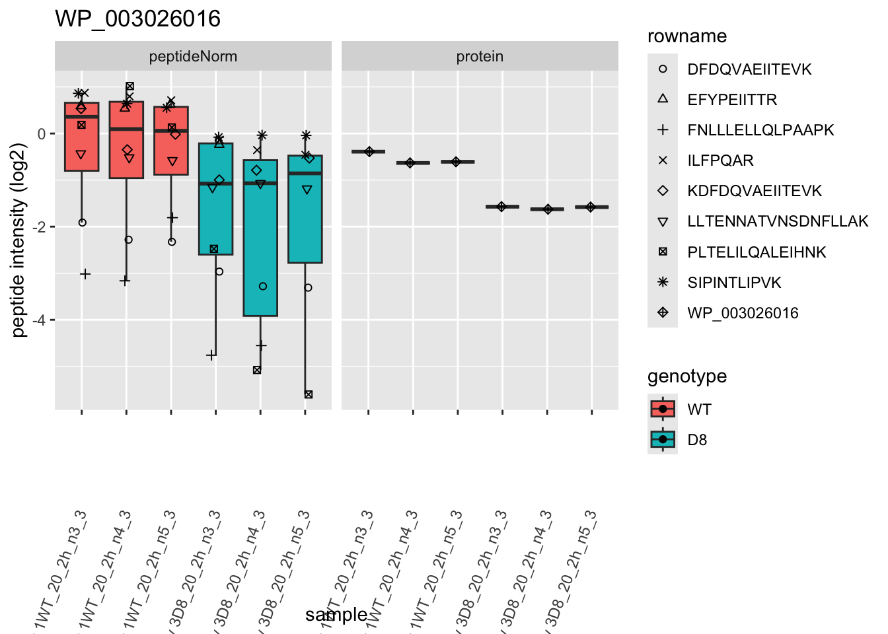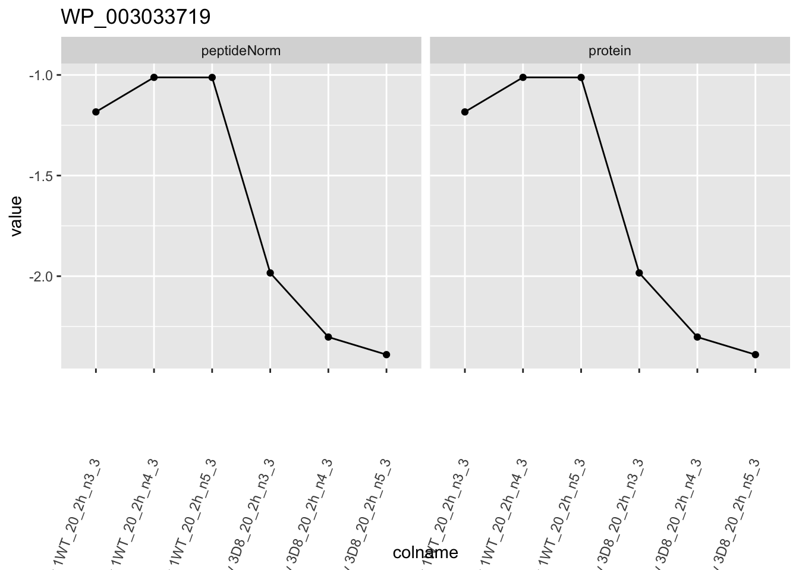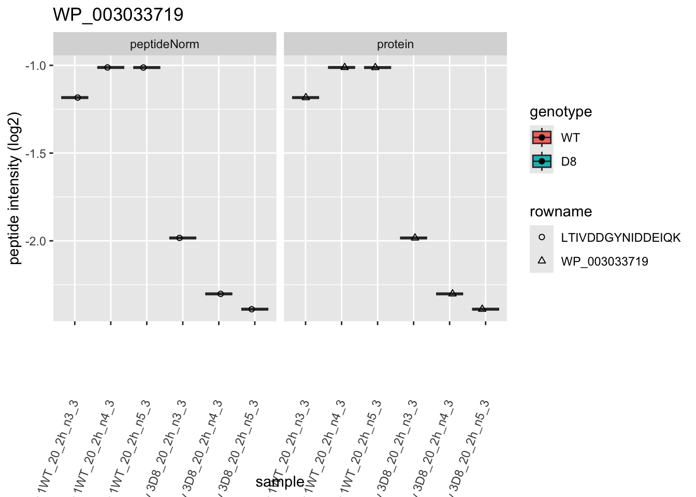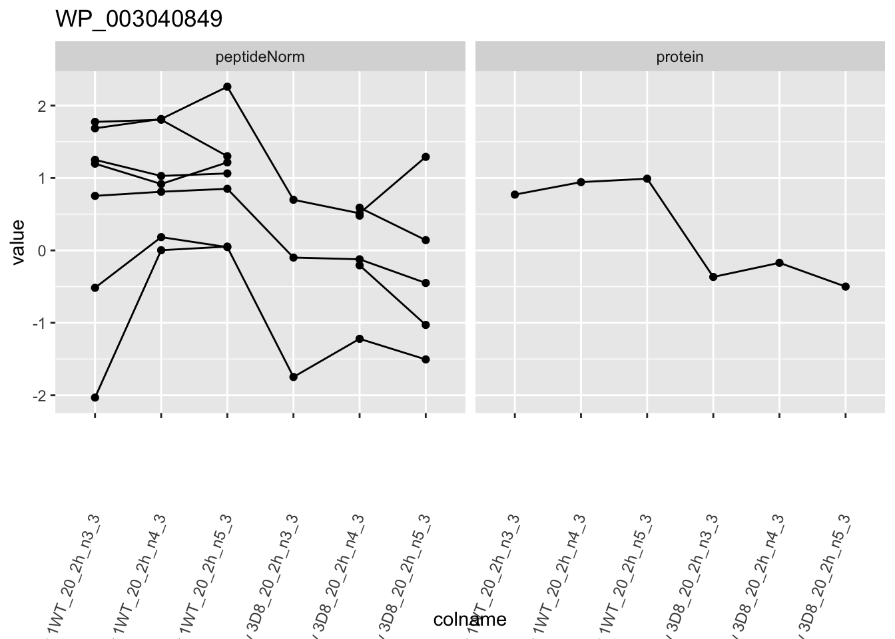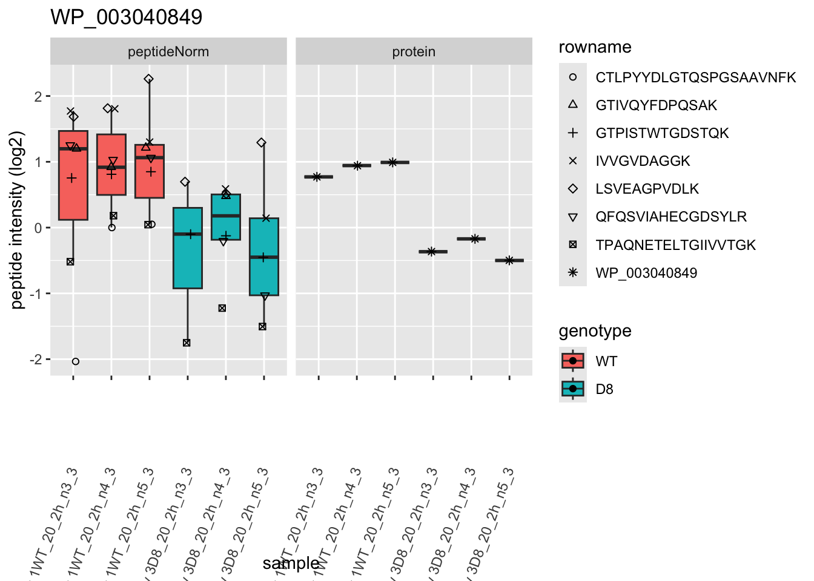
2 Experimental Design
2.1 Sample size
\[ \log_2 \text{FC} = \bar{y}_{p1}-\bar{y}_{p2} \]
\[ T_g=\frac{\log_2 \text{FC}}{\text{se}_{\log_2 \text{FC}}} \]
\[ T_g=\frac{\widehat{\text{signal}}}{\widehat{\text{Noise}}} \]
If we can assume equal variance in both treatment groups:
\[ \text{se}_{\log_2 \text{FC}}=\text{SD}\sqrt{\frac{1}{n_1}+\frac{1}{n_2}} \]
\(\rightarrow\) if number of bio-repeats increases we have a higher power!
- cfr. Study of tamoxifen treated Estrogen Recepter (ER) positive breast cancer patients
2.2 Randomized complete block designs
\[\sigma^2= \sigma^2_{bio}+\sigma^2_\text{lab} +\sigma^2_\text{extraction} + \sigma^2_\text{run} + \ldots\]
- Biological: fluctuations in protein level between mice, fluctations in protein level between cells, …
- Technical: cage effect, lab effect, week effect, plasma extraction, MS-run, …
2.2.1 Nature methods: Points of significance - Blocking
2.2.2 Mouse example

Duguet et al. (2017) MCP 16(8):1416-1432. doi: 10.1074/mcp.m116.062745
- All treatments of interest are present within block!
- We can estimate the effect of the treatment within block!
To illustrate the power of blocking we have subsetted the data of Duguet et al. in a
completely randomized design with
- four mice for which we only have measurements on the ordinary T-cells
- four mice for which we only have measurements on the regulatory T-cells
randomized complete block design with four mice for which we both have
- measurements on ordinary T-cells as well as
- measurements on regulatory T-cells
2.2.3 Data
Click to see code
peptidesTable <- fread("https://raw.githubusercontent.com/statOmics/PDA21/data/quantification/mouseTcell/peptidesRCB.txt")
int64 <- which(sapply(peptidesTable,class) == "integer64")
for (j in int64) peptidesTable[[j]] <- as.numeric(peptidesTable[[j]])
peptidesTable2 <- fread("https://raw.githubusercontent.com/statOmics/PDA21/data/quantification/mouseTcell/peptidesCRD.txt")
int64 <- which(sapply(peptidesTable2,class) == "integer64")
for (j in int64) peptidesTable2[[j]] <- as.numeric(peptidesTable2[[j]])
peptidesTable3 <- fread("https://raw.githubusercontent.com/statOmics/PDA21/data/quantification/mouseTcell/peptides.txt")
int64 <- which(sapply(peptidesTable3,class) == "integer64")
for (j in int64) peptidesTable3[[j]] <- as.numeric(peptidesTable3[[j]])
quantCols <- grep("Intensity ", names(peptidesTable))
pe <- readQFeatures(
assayData = peptidesTable,
fnames = 1,
quantCols = quantCols,
name = "peptideRaw")
rm(peptidesTable)
gc()## used (Mb) gc trigger (Mb) limit (Mb) max used (Mb)
## Ncells 8800206 470.0 15503455 828.0 NA 15503455 828.0
## Vcells 45274038 345.5 81348285 620.7 16384 81348278 620.7## used (Mb) gc trigger (Mb) limit (Mb) max used (Mb)
## Ncells 8800197 470.0 15503455 828.0 NA 15503455 828.0
## Vcells 45271902 345.4 81348285 620.7 16384 81348278 620.7quantCols2 <- grep("Intensity ", names(peptidesTable2))
pe2 <- readQFeatures(
assayData = peptidesTable2,
fnames = 1,
quantCols = quantCols2,
name = "peptideRaw")
rm(peptidesTable2)
gc()## used (Mb) gc trigger (Mb) limit (Mb) max used (Mb)
## Ncells 8712079 465.3 15503455 828.0 NA 15503455 828.0
## Vcells 38667083 295.1 81348285 620.7 16384 81348278 620.7## used (Mb) gc trigger (Mb) limit (Mb) max used (Mb)
## Ncells 8712078 465.3 15503455 828.0 NA 15503455 828.0
## Vcells 38662800 295.0 81348285 620.7 16384 81348278 620.7quantCols3 <- grep("Intensity ", names(peptidesTable3))
pe3 <- readQFeatures(
assayData = peptidesTable3,
fnames = 1,
quantCols = quantCols3,
name = "peptideRaw")
rm(peptidesTable3)
gc()## used (Mb) gc trigger (Mb) limit (Mb) max used (Mb)
## Ncells 8711667 465.3 15503455 828.0 NA 15503455 828.0
## Vcells 29978703 228.8 81348285 620.7 16384 81348278 620.7## used (Mb) gc trigger (Mb) limit (Mb) max used (Mb)
## Ncells 8711592 465.3 15503455 828.0 NA 15503455 828.0
## Vcells 29974145 228.7 81348285 620.7 16384 81348278 620.7### Design
colData(pe)$celltype <- substr(
colnames(pe[["peptideRaw"]]),
11,
14) |>
unlist() |>
as.factor()
colData(pe)$mouse <- pe[[1]] |>
colnames() |>
strsplit(split="[ ]") |>
sapply(function(x) x[3]) |>
as.factor()
colData(pe2)$celltype <- substr(
colnames(pe2[["peptideRaw"]]),
11,
14) |>
unlist() |>
as.factor()
colData(pe2)$mouse <- pe2[[1]] |>
colnames() |>
strsplit(split="[ ]") |>
sapply(function(x) x[3]) |>
as.factor()
colData(pe3)$celltype <- substr(
colnames(pe3[["peptideRaw"]]),
11,
14) |>
unlist() |>
as.factor()
colData(pe3)$mouse <- pe3[[1]] |>
colnames() |>
strsplit(split="[ ]") |>
sapply(function(x) x[3]) |>
as.factor()2.2.4 Preprocessing
2.2.4.1 Log-transform
Click to see code to log-transfrom the data
- Peptides with zero intensities are missing peptides and should be
represent with a
NAvalue rather than0.
pe <- zeroIsNA(pe, "peptideRaw") # convert 0 to NA
pe2 <- zeroIsNA(pe2, "peptideRaw") # convert 0 to NA
pe3 <- zeroIsNA(pe3, "peptideRaw") # convert 0 to NA- Logtransform data with base 2
2.2.4.2 Filtering
Click to see details on filtering
- Remove peptides that map to multiple proteins
We remove PSMs that could not be mapped to a protein or that map to
multiple proteins (the protein identifier contains multiple identifiers
separated by a ;).
pe <- filterFeatures(
pe, ~ Proteins != "" & ## Remove failed protein inference
!grepl(";", Proteins)) ## Remove protein groups## 'Proteins' found in 2 out of 2 assay(s).pe2 <- filterFeatures(
pe2, ~ Proteins != "" & ## Remove failed protein inference
!grepl(";", Proteins)) ## Remove protein groups## 'Proteins' found in 2 out of 2 assay(s).pe3 <- filterFeatures(
pe3, ~ Proteins != "" & ## Remove failed protein inference
!grepl(";", Proteins)) ## Remove protein groups## 'Proteins' found in 2 out of 2 assay(s).- Remove reverse sequences (decoys) and contaminants
We now remove the contaminants, peptides that map to decoy sequences, and proteins which were only identified by peptides with modifications.
## 'Reverse' found in 2 out of 2 assay(s).## 'Potential.contaminant' found in 2 out of 2 assay(s).## 'Reverse' found in 2 out of 2 assay(s).## 'Potential.contaminant' found in 2 out of 2 assay(s).## 'Reverse' found in 2 out of 2 assay(s).## 'Potential.contaminant' found in 2 out of 2 assay(s).- Drop peptides that were identified in less than three sample
We keep peptides that were observed at least three times.
nObs <- 3
n <- ncol(pe[["peptideLog"]])
pNA <- (n-nObs)/n
pe <- filterNA(pe, pNA = pNA, i = "peptideLog")
nrow(pe[["peptideLog"]])## [1] 38782n <- ncol(pe2[["peptideLog"]])
pNA <- (n-nObs)/n
pe2 <- filterNA(pe2, pNA = pNA, i = "peptideLog")
nrow(pe2[["peptideLog"]])## [1] 37898n <- ncol(pe3[["peptideLog"]])
pNA <- (n-nObs)/n
pe3 <- filterNA(pe3, pNA = pNA, i = "peptideLog")
nrow(pe3[["peptideLog"]])## [1] 439842.2.4.3 Normalization
Click to see code to normalize the data
2.2.4.4 Summarization
Click to see code to summarize the data
## Your quantitative and row data contain missing values. Please read the
## relevant section(s) in the aggregateFeatures manual page regarding the
## effects of missing values on data aggregation.## Aggregated: 1/1## Your quantitative and row data contain missing values. Please read the
## relevant section(s) in the aggregateFeatures manual page regarding the
## effects of missing values on data aggregation.
## Aggregated: 1/1## Your quantitative and row data contain missing values. Please read the
## relevant section(s) in the aggregateFeatures manual page regarding the
## effects of missing values on data aggregation.
## Aggregated: 1/12.2.4.5 Filtering proteins with too many missing values
We want to have at least two observed protein intensities for each group so we set the minimum number of observed values at 4. We still have to check for the observed proteins if that is the case.
For block design more clever filtering can be used. E.g. we could imply that we have both cell types in at least two animals…
2.2.5 Data Exploration: what is impact of blocking?
Click to see code
levels(colData(pe3)$mouse) <- paste0("m",1:7)
mdsObj3 <- plotMDS(assay(pe3[["protein"]]), plot = FALSE)
mdsOrig <- colData(pe3) |>
as.data.frame() |>
mutate(mds1 = mdsObj3$x,
mds2 = mdsObj3$y,
lab = paste(mouse,celltype,sep="_")) |>
ggplot(aes(x = mds1, y = mds2, label = lab, color = celltype, group = mouse)) +
geom_text(show.legend = FALSE) +
geom_point(shape = 21) +
geom_line(color = "black", linetype = "dashed") +
xlab(
paste0(
mdsObj3$axislabel,
" ",
1,
" (",
paste0(
round(mdsObj3$var.explained[1] *100,0),
"%"
),
")"
)
) +
ylab(
paste0(
mdsObj3$axislabel,
" ",
2,
" (",
paste0(
round(mdsObj3$var.explained[2] *100,0),
"%"
),
")"
)
) +
ggtitle("Original (RCB)")
levels(colData(pe)$mouse) <- paste0("m",1:4)
mdsObj <- plotMDS(assay(pe[["protein"]]), plot = FALSE)
mdsRCB <- colData(pe) |>
as.data.frame() |>
mutate(mds1 = mdsObj$x,
mds2 = mdsObj$y,
lab = paste(mouse,celltype,sep="_")) |>
ggplot(aes(x = mds1, y = mds2, label = lab, color = celltype, group = mouse)) +
geom_text(show.legend = FALSE) +
geom_point(shape = 21) +
geom_line(color = "black", linetype = "dashed") +
xlab(
paste0(
mdsObj$axislabel,
" ",
1,
" (",
paste0(
round(mdsObj$var.explained[1] *100,0),
"%"
),
")"
)
) +
ylab(
paste0(
mdsObj$axislabel,
" ",
2,
" (",
paste0(
round(mdsObj$var.explained[2] *100,0),
"%"
),
")"
)
) +
ggtitle("Randomized Complete Block (RCB)")
levels(colData(pe2)$mouse) <- paste0("m",1:8)
mdsObj2 <- plotMDS(assay(pe2[["protein"]]), plot = FALSE)
mdsCRD <- colData(pe2) |>
as.data.frame() |>
mutate(mds1 = mdsObj2$x,
mds2 = mdsObj2$y,
lab = paste(mouse,celltype,sep="_")) |>
ggplot(aes(x = mds1, y = mds2, label = lab, color = celltype, group = mouse)) +
geom_text(show.legend = FALSE) +
geom_point(shape = 21) +
xlab(
paste0(
mdsObj$axislabel,
" ",
1,
" (",
paste0(
round(mdsObj2$var.explained[1] *100,0),
"%"
),
")"
)
) +
ylab(
paste0(
mdsObj$axislabel,
" ",
2,
" (",
paste0(
round(mdsObj2$var.explained[2] *100,0),
"%"
),
")"
)
) +
ggtitle("Completely Randomized Design (CRD)")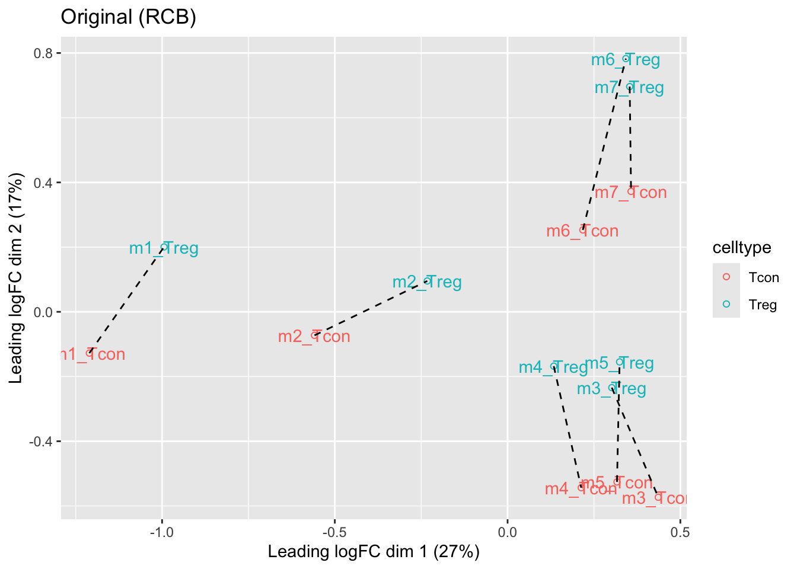
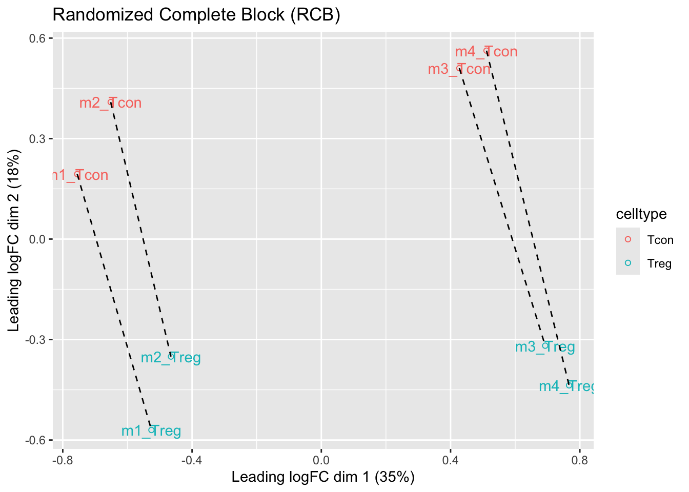
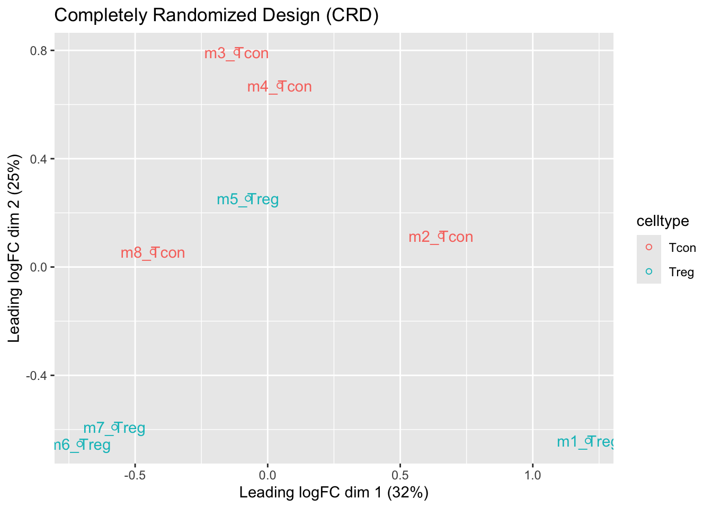
We observe that the leading fold change is according to mouse
In the second dimension we see a separation according to cell-type
With the Randomized Complete Block design (RCB) we can remove the mouse effect from the analysis!
We can isolate the between block variability from the analysis using linear model:
Formula in R \[ y \sim \text{celltype} + \text{mouse} \]
Formula
\[ y_i = \beta_0 + \beta_\text{Treg} x_{i,\text{Treg}} + \beta_{m2}x_{i,m2} + \beta_{m3}x_{i,m3} + \beta_{m4}x_{i,m4} + \epsilon_i \]
with
\(x_{i,Treg}=\begin{cases} 1& \text{Treg}\\ 0& \text{Tcon} \end{cases}\)
\(x_{i,m2}=\begin{cases} 1& \text{m2}\\ 0& \text{otherwise} \end{cases}\)
\(x_{i,m3}=\begin{cases} 1& \text{m3}\\ 0& \text{otherwise} \end{cases}\)
\(x_{i,m4}=\begin{cases} 1& \text{m4}\\ 0& \text{otherwise} \end{cases}\)
Possible in msqrob2 and MSstats but not possible with Perseus!
2.2.6 Modeling and inference
2.2.6.3 Estimation, effect size and inference
Effect size in RCB
## [[1]]
Effect size in CRD
## [[1]]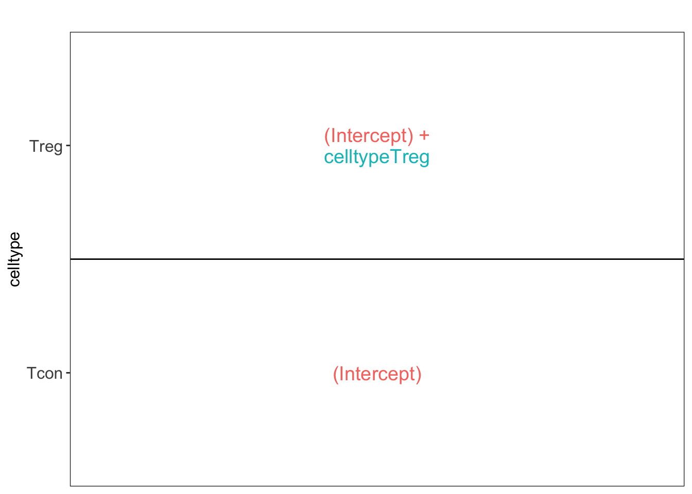
2.2.7 Comparison of results
Click to see code
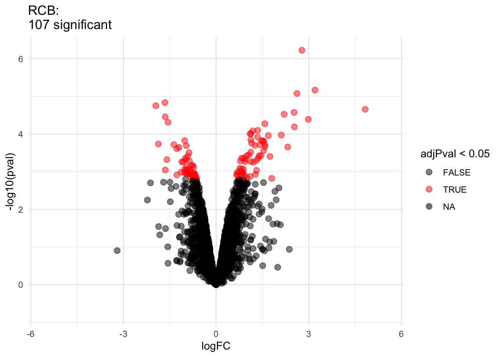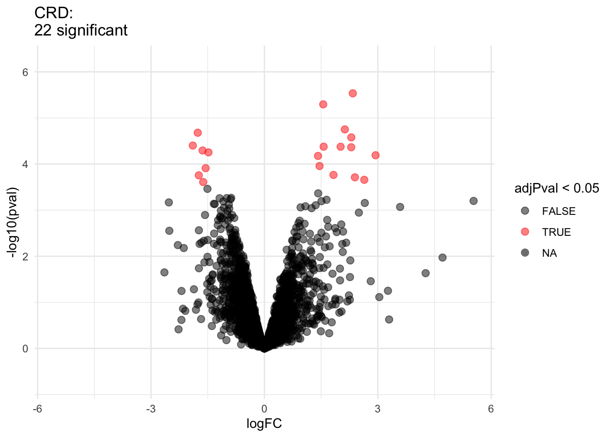
2.2.8 Comparison of standard deviation
Click to see code
accessions <- rownames(pe[["protein"]])[rownames(pe[["protein"]])%in%rownames(pe2[["protein"]])]
dat <- data.frame(
sigmaRBC = sapply(rowData(pe[["protein"]])$msqrobModels[accessions], getSigmaPosterior),
sigmaCRD <- sapply(rowData(pe2[["protein"]])$msqrobModels[accessions], getSigmaPosterior)
)
plotRBCvsCRD <- ggplot(data = dat, aes(sigmaRBC, sigmaCRD)) +
geom_point(alpha = 0.1, shape = 20) +
scale_x_log10() +
scale_y_log10() +
geom_abline(intercept=0,slope=1)## Warning: Removed 351 rows containing missing values or values outside the scale range
## (`geom_point()`).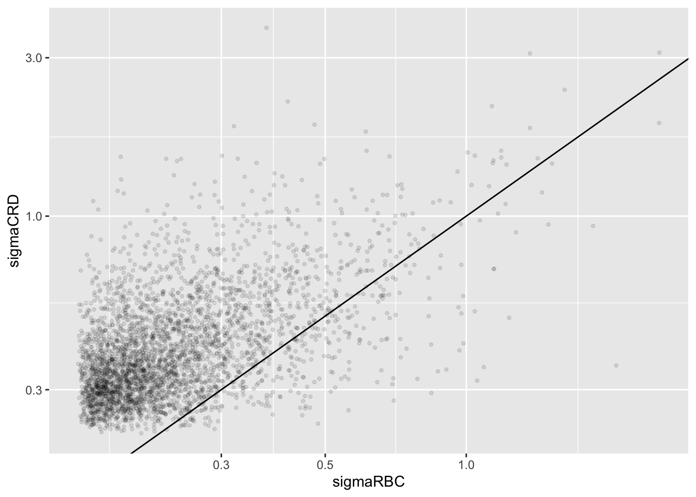
We clearly observe that the standard deviation of the protein expression in the RCB is smaller for the majority of the proteins than that obtained with the CRD
Can you think of a reason why it would not be useful to block on a particular factor?
2.3 Pseudo-replication
- The Francisella tularensis that we used before was a subset of the data of Ramond et al.
- The authors have run the sample for each bio-rep in technical triplicate on the mass-spectrometer.
2.3.1 Data
Click to see code to import data
- We use a peptides.txt file from MS-data quantified with maxquant that contains MS1 intensities summarized at the peptide level.
peptidesTable <- fread("https://raw.githubusercontent.com/statOmics/MSqRobSumPaper/refs/heads/master/Francisella/data/maxquant/peptides.txt")
int64 <- which(sapply(peptidesTable,class) == "integer64")
for (j in int64) peptidesTable[[j]] <- as.numeric(peptidesTable[[j]]) - Maxquant stores the intensity data for the different samples in columnns that start with Intensity. We can retreive the column names with the intensity data with the code below:
- Read the data and store it in QFeatures object
pe <- readQFeatures(
assayData = peptidesTable,
fnames = 1,
quantCols = quantCols,
name = "peptideRaw")## Checking arguments.## Loading data as a 'SummarizedExperiment' object.## Formatting sample annotations (colData).## Formatting data as a 'QFeatures' object.## Setting assay rownames.## used (Mb) gc trigger (Mb) limit (Mb) max used (Mb)
## Ncells 8796340 469.8 15503455 828.0 NA 15503455 828.0
## Vcells 34773472 265.4 81348285 620.7 16384 81348285 620.7## used (Mb) gc trigger (Mb) limit (Mb) max used (Mb)
## Ncells 8796246 469.8 15503455 828.0 NA 15503455 828.0
## Vcells 34766829 265.3 81348285 620.7 16384 81348285 620.7- Update data with information on design
colData(pe)$genotype <- pe[[1]] |>
colnames() |>
substr(12,13) |>
as.factor() |>
relevel("WT")
colData(pe)$biorep <- pe[[1]] |>
colnames() |>
substr(22,22)
colData(pe)$biorep <- paste(colData(pe)$genotype,colData(pe)$biorep,sep="_")
pe |> colData()## DataFrame with 18 rows and 2 columns
## genotype biorep
## <factor> <character>
## Intensity 1WT_20_2h_n3_1 WT WT_3
## Intensity 1WT_20_2h_n3_2 WT WT_3
## Intensity 1WT_20_2h_n3_3 WT WT_3
## Intensity 1WT_20_2h_n4_1 WT WT_4
## Intensity 1WT_20_2h_n4_2 WT WT_4
## ... ... ...
## Intensity 3D8_20_2h_n4_2 D8 D8_4
## Intensity 3D8_20_2h_n4_3 D8 D8_4
## Intensity 3D8_20_2h_n5_1 D8 D8_5
## Intensity 3D8_20_2h_n5_2 D8 D8_5
## Intensity 3D8_20_2h_n5_3 D8 D8_52.3.2 Preprocessing
Click to see code to log-transfrom the data
- Log transform
- Peptides with zero intensities are missing peptides and should be
represent with a
NAvalue rather than0.
- Logtransform data with base 2
- Filtering
- We remove PSMs that could not be mapped to a protein or that map to
multiple proteins (the protein identifier contains multiple identifiers
separated by a
;).
pe <- filterFeatures(
pe, ~ Proteins != "" & ## Remove failed protein inference
!grepl(";", Proteins)) ## Remove protein groups## 'Proteins' found in 2 out of 2 assay(s).- Remove reverse sequences (decoys) and contaminants. Note that this is indicated by the column names Reverse and depending on the version of maxQuant with Potential.contaminants or Contaminants.
## 'Reverse' found in 2 out of 2 assay(s).## 'Contaminant' found in 2 out of 2 assay(s).- Drop peptides that were identified in less than three sample. We tolerate the following proportion of NAs: pNA = (n-3)/n.
nObs <- 3
n <- ncol(pe[["peptideLog"]])
pNA <- (n-nObs)/n
pe <- filterNA(pe, pNA = pNA, i = "peptideLog")
nrow(pe[["peptideLog"]])## [1] 7244We keep 7244 peptides upon filtering.
- Normalization by median centering
- Summarization. We use the standard sumarisation in aggregateFeatures, which is a robust summarisation method.
## Your quantitative and row data contain missing values. Please read the
## relevant section(s) in the aggregateFeatures manual page regarding the
## effects of missing values on data aggregation.## Aggregated: 1/1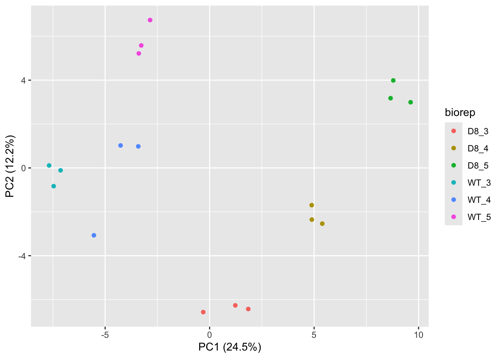
- Response?
- Experimental unit?
- Observational unit?
- Factors?
## [[1]]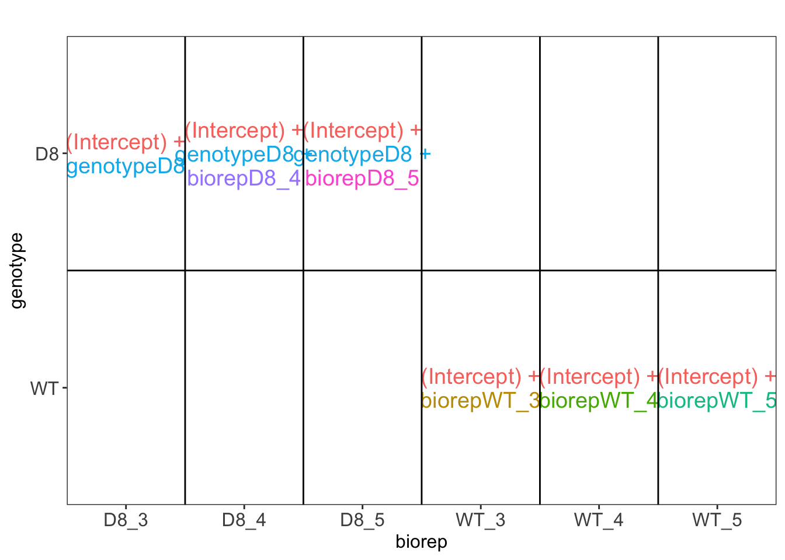
\(\rightarrow\) Pseudo-replication, randomisation to bio-repeat and each bio-repeat measured in technical triplicate. \(\rightarrow\) If we would analyse the data using a linear model based on each measured intensity, we would act as if we had sampled 18 bio-repeats. \(\rightarrow\) Effect of interest has to be assessed between bio-repeats. So block analysis is not possible (if we condition on bio-repeat, we condition on the genotype)!
2.3.3 Wrong analysis
pe <- msqrob(object = pe, i = "protein", formula = ~genotype, modelColumnName = "wrong", overwrite = TRUE)
L <- makeContrast("genotypeD8 = 0", parameterNames = c("genotypeD8"))
pe <- hypothesisTest(object = pe, i = "protein", contrast = L, modelColumn = "wrong", resultsColumnNamePrefix = "wrong_", overwrite = TRUE)
volcanoWrong <- ggplot(
rowData(pe[["protein"]])$wrong_genotypeD8,
aes(x = logFC, y = -log10(pval), color = adjPval < 0.05)
) +
geom_point(cex = 2.5) +
scale_color_manual(values = alpha(c("black", "red"), 0.5)) +
theme_minimal() +
ggtitle(paste0("wrong analysis: ",sum(rowData(pe[["protein"]])$wrong_genotypeD8$adjPval <0.05, na.rm=TRUE)," DA"))
volcanoWrong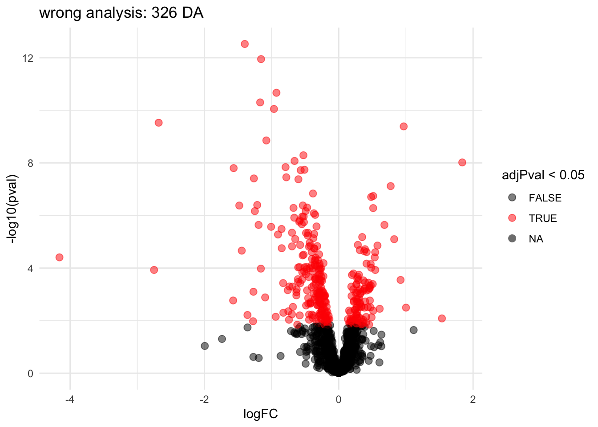
Note, that the analysis where we ignore that we have multiple technical repeats for each bio-repeat returns many significant DA proteins because we act as if we have much more independent observations.
2.3.4 Correct analysis
Mixed Models can model the correlation structure in the data
They can acknowledge that protein expression values from runs from the same biological repeat are more alike than protein expression values from runs of different biological repeats.
Mixed models can also be used when inference between and within blocks is needed.
For the francisella example the formula in msqrob2 becomes: (formula: ~ genotype + (1|biorep)).
\[ \left\{\begin{array}{rcl} y_{ir} &=& \beta_0 + \beta_{wt}X_{wt,i} + b_i + \epsilon_{ir}\\ b_i & \sim & N(0,\sigma_b^2)\\ \epsilon_{ir} &\sim& N(0,\sigma_\epsilon^2) \end{array}\right.\]
## Warning: 'experiments' dropped; see 'drops()'L <- makeContrast("genotypeD8 = 0", parameterNames = c("genotypeD8"))
pe <- hypothesisTest(object = pe, i = "protein", contrast = L, overwrite = TRUE)
volcanoMixed <- ggplot(
rowData(pe[["protein"]])$genotypeD8,
aes(x = logFC, y = -log10(pval), color = adjPval < 0.05)
) +
geom_point(cex = 2.5) +
scale_color_manual(values = alpha(c("black", "red"), 0.5)) +
theme_minimal() +
ggtitle(paste0("correct analysis: ",sum(rowData(pe[["protein"]])$genotypeD8$adjPval <0.05, na.rm=TRUE)," DA"))
volcanoMixed## Warning: Removed 46 rows containing missing values or values outside the scale range
## (`geom_point()`).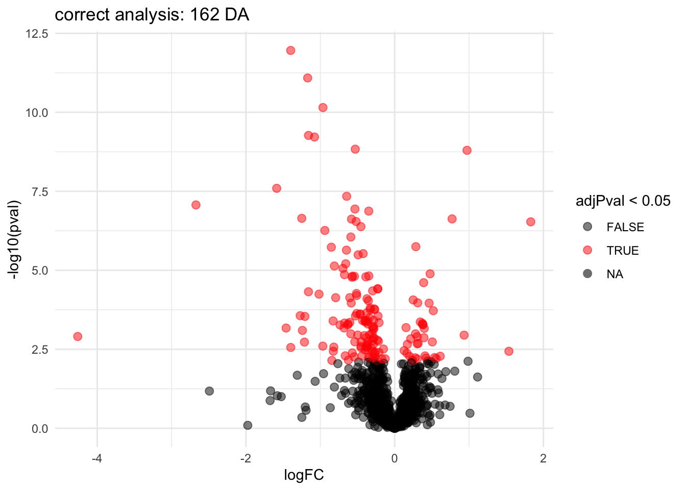
Note, that the statistical inference with mixed models is still a bit too liberal because it:
- hypothesis tests are only valid asymptotically (large number of biorepeats).
- in small samples the between biorepeat variance is sometimes estimated to be zero due to estimation uncertainty and for these proteins the model still acts as if all 18 protein expression values are independent.
Mixed models are also very useful to analyse data from large labeled experiments (Vandenbulcke and Clement 2025).
But, they are beyond the scope of the lecture series.
CONSULT BIOSTATISTICIAN IN CASE OF EXPERIMENTS WITH PSEUDO-REPLICATES, TECHNICAL REPEATS, COMPLEX DESIGNS, …
3 Software & code
Our R/Bioconductor package msqrob2 can be used in R markdown scripts or with GUI/shinyApps QFeaturesGUI (+) and msqrob2gui (+: forked from the UCLouvain-CBIO lab).
GUIs are intended as a introduction to the key concepts of proteomics data analysis for users who have no experience in R.
However, learning how to code data analyses in R markdown scripts is key for open en reproducible science and for reporting your proteomics data analyses and interpretation in a reproducible way.
More information on our tools can be found in our papers (L. J. Goeminne, Gevaert, and Clement 2016), (L. J. E. Goeminne et al. 2020), (Sticker et al. 2020) and (Vandenbulcke and Clement 2025). Please refer to our work when using our tools.